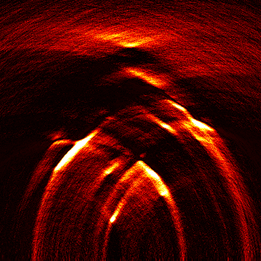
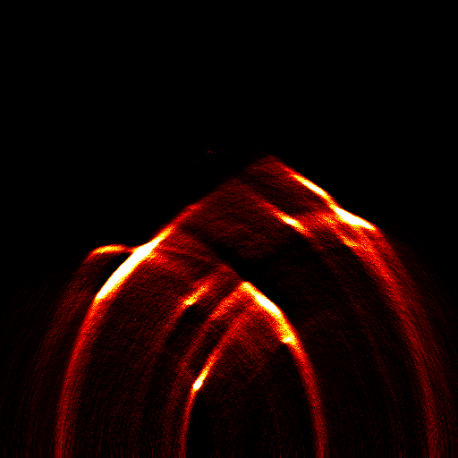
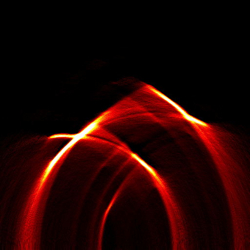
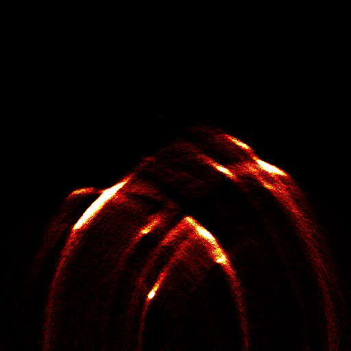
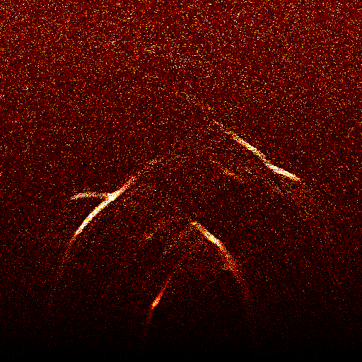
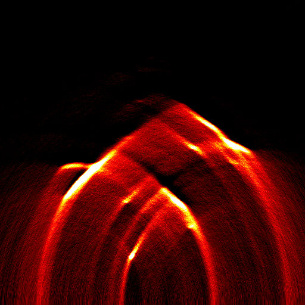

Algorithms
Reconstruction
All algorithms are dispatched by patReconstruct through getReconFunction.
Example reconstructions
Same linear-array acquisition of data/Example1.bmp, reconstructed with different algorithms.

Overview: phantom vs TR, UBP, DMAS, DAS, FBP.










Supported names
patListAlgorithms
% DAS, CF-DAS, DMAS, DS-DMAS, MV-DAS, VDAS, SCF-DAS, CFMV-DAS,
% FBP, UBP, DMAS-UBP, VDAS-UBP, TR, ITERATIVE-DAS, ITERATIVE-TRAlgorithm reference
| Name | File | Description |
|---|---|---|
DAS | recon/das.m | Delay-and-sum with subsample ToF interpolation |
CF-DAS | recon/cfdas.m | Coherence-factor–weighted DAS |
DMAS | recon/dmas.m | Delay-multiply-and-sum (nonlinear) |
DS-DMAS | recon/ds_dmas.m | Dual-stage DAS within subarrays, DMAS across them |
MV-DAS | recon/mv_das.m | Minimum-variance / Capon adaptive beamforming |
VDAS | recon/vdas.m | Variance-weighted DAS |
SCF-DAS | recon/scf_das.m | Sign-coherence-factor–weighted DAS |
CFMV-DAS | recon/cfmv_das.m | Coherence × MV hybrid |
FBP | recon/fbp.m | Filtered back-projection (Ram-Lak) |
UBP | recon/ubp.m | Xu–Wang universal back-projection |
DMAS-UBP | recon/dmas_ubp.m | UBP preprocessing + DMAS |
VDAS-UBP | recon/vdas_ubp.m | UBP preprocessing + variance-weighted DAS |
TR | recon/time_reversal.m | k-Wave time reversal |
ITERATIVE-DAS | recon/iterative.m | Iterative updates with DAS adjoint-like steps |
ITERATIVE-TR | recon/iterative.m | Iterative updates with time-reversal steps |
Shared options
envelope_signal— Hilbert envelope after reconstructionremove_negatives— zero negative pressuresbandpass_filter,frequency_low,frequency_highinterp_method—nearest|linear|cubic
Algorithm-specific knobs
| Algorithm | Options |
|---|---|
| DS-DMAS | num_subarrays |
| MV-DAS / CFMV-DAS | dl_factor |
| VDAS / VDAS-UBP | k_power |
| SCF-DAS | scf_power |
| ITERATIVE-* | InitialGuess, NumIterations, StepSize, UpdateMethod |
Geometry compatibility
Physics-aware simulations return ordered physical-element traces.
Current beamformers locate receivers with find(mask).
patReconstruct uses legacyCompatibleSensorInputs to snap element centres
to the grid and reorder channels so legacy engines remain usable.
UBP-family algorithms keep the geometry struct when needed.
Saving outputs
[p0, info] = patReconstruct(sim, 'DMAS', ...
'SaveOutput', true, ...
'SaveMat', true, ...
'SavePng', true, ...
'OutputDir', 'output/recon');Evaluation metrics
patEvaluate compares a reconstruction to sim.p0_reference (or any ground-truth map):
| Field | Description |
|---|---|
mse / rmse | Mean / root-mean-square error (after mat2gray) |
psnr | Peak signal-to-noise ratio (dB) |
ssim | Structural similarity |
snr | Signal energy vs error energy (dB) |
sharpness | Mean gradient magnitude |
uiqi | Universal image quality index |
cnr | Contrast-to-noise ratio |
sbr | Signal-to-background ratio |